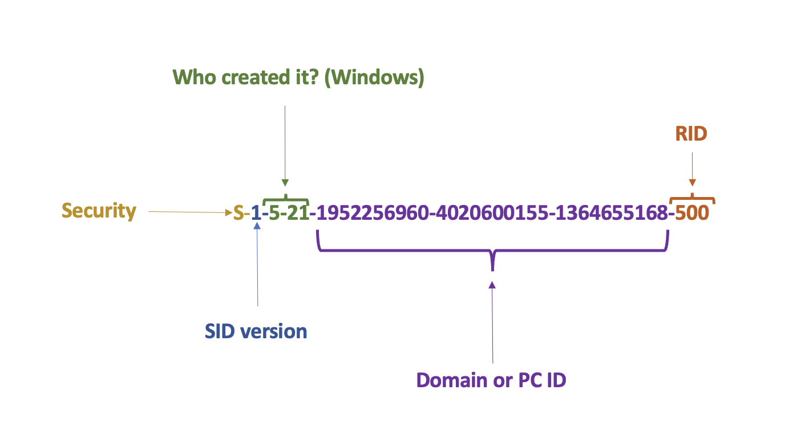
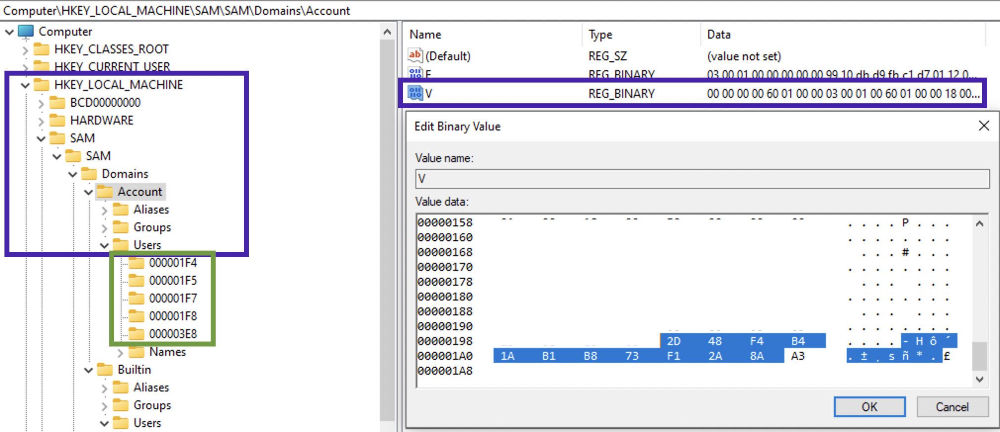
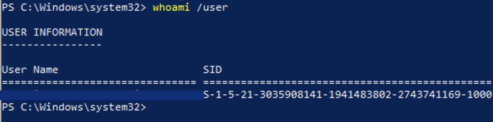

Each process in the system has an access token. This token determies what privileges this fellow has. This token consists of:
- User SID
- Group SID
- Integrity level (mandatory label). Vista+/WinServer 2008+. This label determines what privileges the process has based on the assigned accesses and groups.
- Logon session SID
- Token type (primary or impresonation)
- Impersonation level
- User privileges list
- Other
Checks:
- What is your mandatory label❓
- Compare this label to the object’s label.
- Take User and Group SIDs of the process and ACL of the object in question
SID
Below is the structure of a SID. SID, shortly speaking, is a user id. The actual ID of the user, is the RID (relative identifier) part.

In case Who created it? aka issuing authority ends with number 21, there will be a trailing SID which represendts PC or domain identifier (purple in the picture above). 1 - revision number, 5 - issuing autority, 21 - sub-issuing authority.
To get a user’s SID:
wmic useraccount where name='veronicazvereva' get sid
# or
whoami /user # for current user
PC/domain ID can be viewed in SAM\SAM\Domains\Accounts, value V, last 12 bytes of the data chunk:

In order to translate this value, split the hex 12 byte value into three 4 byte chunks. Since these are little-endian, reverse the order of the bytes, convert each to decimal If this is a negative value, something is not right. It’s a 32-bit unsigned value! For example, in the below picture we see that the machine id is 2d 48 f4 b4 1a b1 b8 73 f1 2a 8a a3. Splitting into 3 chunks gives us: 2d 48 f4 b4, 1a b1 b8 73 and f1 2a 8a a3. Lets now convert each to little-endian: b4 f4 48 2d, 73, b8, b1, 1a and a3 8a 2a f1. Now, each set of 4 bytes in decimal: 3035908141, 1941483802, 2743741169. The resulting machine ID part of the SID is then: 3035908141-1941483802-2743741169. Let’s check in PowerShell:

In the picture above with the registry window the green square 🟩 shows the RIDs in hex. Given the RID one can deduce something about the user, since there are some users that have predefined RIDs:
S-1-5-21-X-X-X-500- default adminS-1-5-21-X-X-X-501- default guestS-1-5-21-X-X-X-1000- the first user created on a Windows 7 and below,S-1-5-21-X-X-X-1001- for newer systemsS-1-5-18- SystemS-1-5-3- batchS-1-5-2- networkS-1-5-21-544- local admin group
On the previous picture we can see that the RID is 1000, meaning it’s the first user account (surprisingly not 1001 since it’s a Windows 10 machine).
RID hijacking
System udentifies users by their RIDs (the last portion of SID), not by username. What happens if we have changed manually the RID of the guest user? Well, if we set it to 500, the system would treat him as default admin with all the corresponding rights.
Local Security Authority Subsystem
Single Sign-on. LSA is its part. Responsible for authentication, authorisation. Manages derived credentials (NTLM, kerberos tickets, sessions, hashes etc).
Image file is located at %WINDIR%\System32.
Login Process
This is how a general picture looks like:

Sorry for the dragon 🐉.
References
[1] RID Hijaking by Sergey Klevogin, LPT Mater
[2] Analysis the Structure of SAM and Cracking Password Base on Windows Operating System, by Jiang Du and Jiwei Li
[3] Вниз по кроличьей норе как работает аутентификация LSA, или Под капотом системы безопасности Windows, Артем Синицын
[3] Diving into Windows Logon Process
[4]